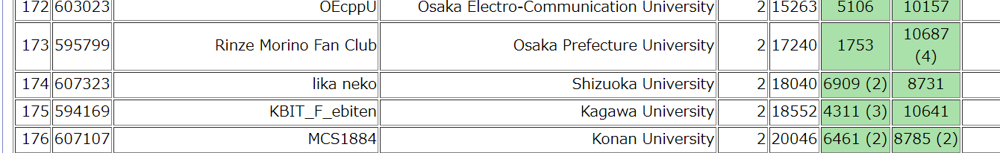
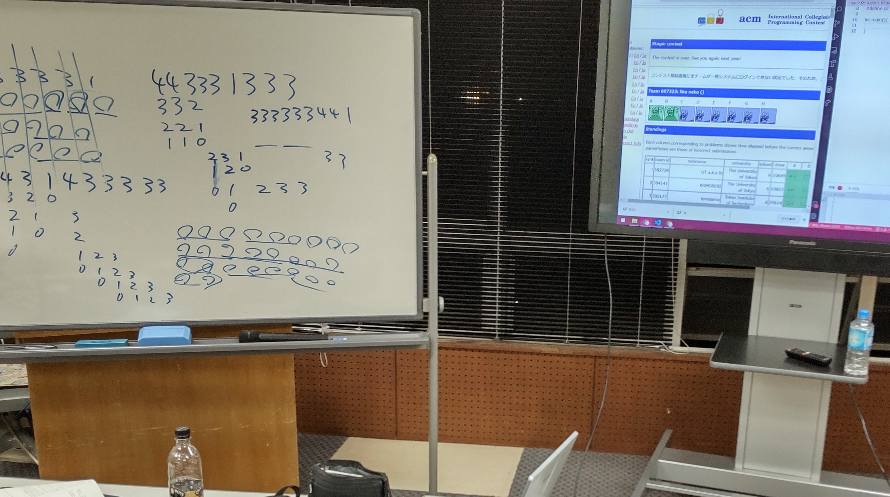
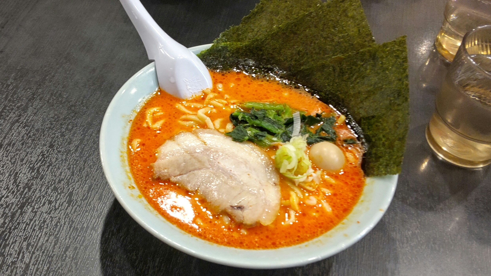

ICPC 2021 アジア地区横浜大会国内予選 体験記
結果

全体で167位、学内で2位でした。というわけで予選敗退……ぴえん
–予選当日–
準備
午前11時にみんなで集まり、リハーサルを行いました。実は全員初参加なので提出方法や細かいルールについて詳しく知らず、いろいろ戸惑いました。Kを無事提出したくらいである程度理解できたので、予約していた部屋へ移動し、Lについて考えたり本番での作戦会議をしていました。
チーム「lika neko」の作戦
- チームメンバー
- ヤドン(仮)
- Me(仮)
- ケニア
使用言語は自分がPythonで他はC++。
- 問題を見る
- AがケニアでもできそうならMeがB、ヤドンがCに取り掛かる
- Aがケニア一人で無理そうならMeもA、ヤドンがBに取り掛かる
- 後はなんとかする
はたしてこの作戦はうまくいくのか……
本番
……作戦はうまくいきませんでした。
問題を見て、「AがケニアでもできそうならMeがB、ヤドンがCに取り掛かる」ことにし一斉に取り組み始めました。
まず直ぐにCがむずいと判断しDに取り掛かるヤドン。黙々とBに取り組むMe。そんな中、自分は難しくないはずの問題で無限ループが起こりそれが解決できない模様。結局作戦なんか無視して、最終的にAをヤドンに解いてもらい、BはMeが途中までやったのをヤドンが改善して提出。残り時間でCを飛ばしてみんなでDを考えてました。
下はみんなでDを考えてるときの写真。(なぜこんな時に自分は写真を撮っていたか自分すらわからない)

Sampleの2つ目がわからず、ずっとホワイトボードに書いたり消したりしてました。
そしてそのまま終了……
反省会
とりあえずDがわからなくて悔しいのでDについて1時間くらい考えました……が結局わかりませんでした。
その後はみんなで魂心家でラーメンを食べて終わりました。（自分はなんとなく旨辛ラーメンみたいなのを頼みましたが少し後悔してます……）浜松駅周辺をぶらぶらするも、どの店も閉まっててやることがないということでそのまま帰りました。

参加してみて…
今回は急遽参加することになったとはいえ、準備不足、自分の実力不足など、今後改善できる点は多かったです。それでも楽しかった！！ので来年はもっとパワーアップして再チャレンジしたいですね！来年も誘ってもらえるようにとにかく実力を上げなければ……